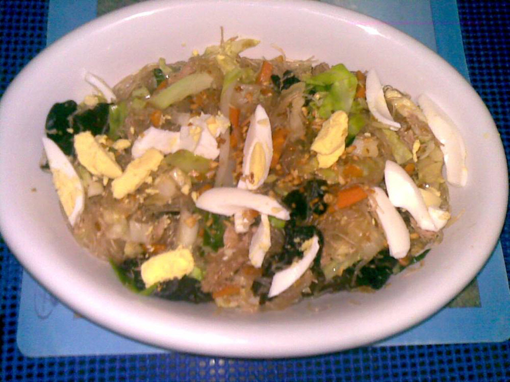

Pancit Sotanghon

Description:
The recipe of this Filipino pancit sotanghon was made from leftovers of boiled chicken and vegetables.
Ingredients:
- 1 cup dried wood ear mushrooms (tenga ng daga)
- 1 tablespoon vegetable oil
- 1 clove garlic, minced
- 1 small onion, chopped
- ½ teaspoon achiote powder
- 1 ¾ cups chopped cooked chicken
- 2 teaspoons soy sauce
- 1 teaspoon fish sauce
- 1 cube chicken bouillon
- 1 cup water
- 1 (10.5 ounce) package green bean vermicelli
- 1 (8 ounce) package shredded cabbage
- 1 small head bok choy, chopped
- 1 carrot, chopped
- ¼ teaspoon ground black pepper, or to taste
- 1 pinch chili powder (Optional)
- 2 hard-boiled eggs, sliced
Steps:
- Soak mushrooms in a bowl of water.
- Heat oil in a saucepan over medium-high heat. Add garlic; cook until browned, about 2 minutes. Transfer garlic to a bowl. Saute onion and achiote powder until onion is translucent, about 5 minutes. Add chicken, soy sauce, and fish sauce. Stir in bouillon cube until dissolved. Add 1 cup water; bring to a boil.
- Soak vermicelli in a bowl of hot water, 2 to 3 minutes. Drain. Cut noodles to a desired length.
- Drain mushrooms. Cut into 1-inch pieces.
- Toss cabbage, bok choy, and carrot into the boiling water in the pan. Add the vermicelli, mushrooms, pepper, and chili powder. Cook, mixing well, until pancit is slightly dried, about 5 minutes. Arrange pancit on a platter. Garnish with the browned garlic and sliced eggs.
Return to Main Page